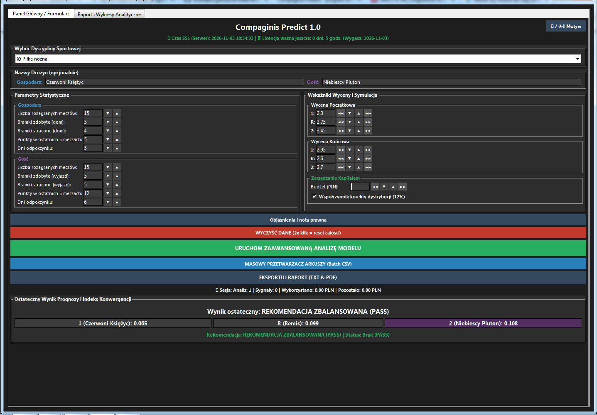
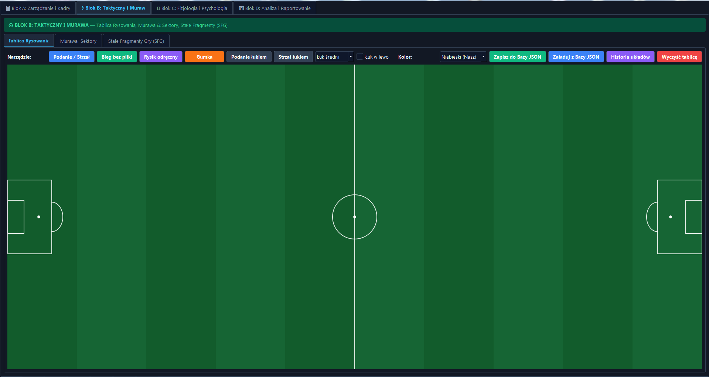
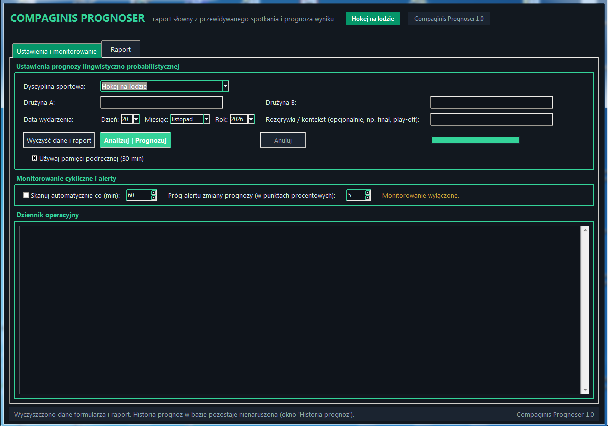
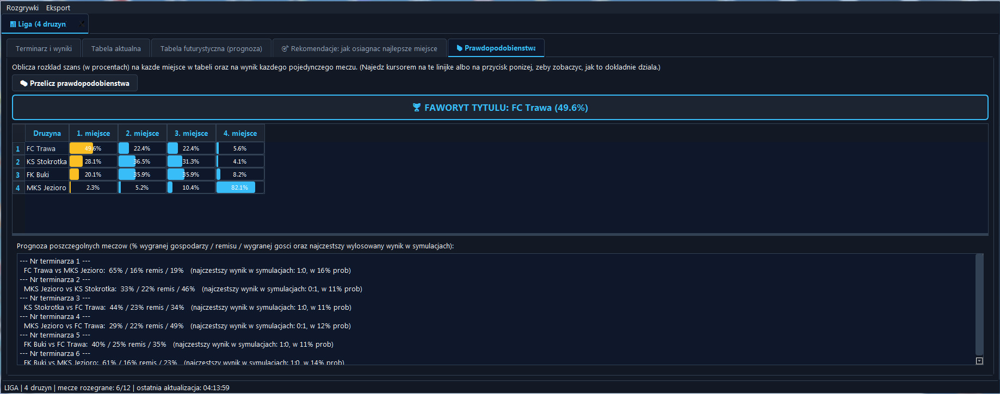
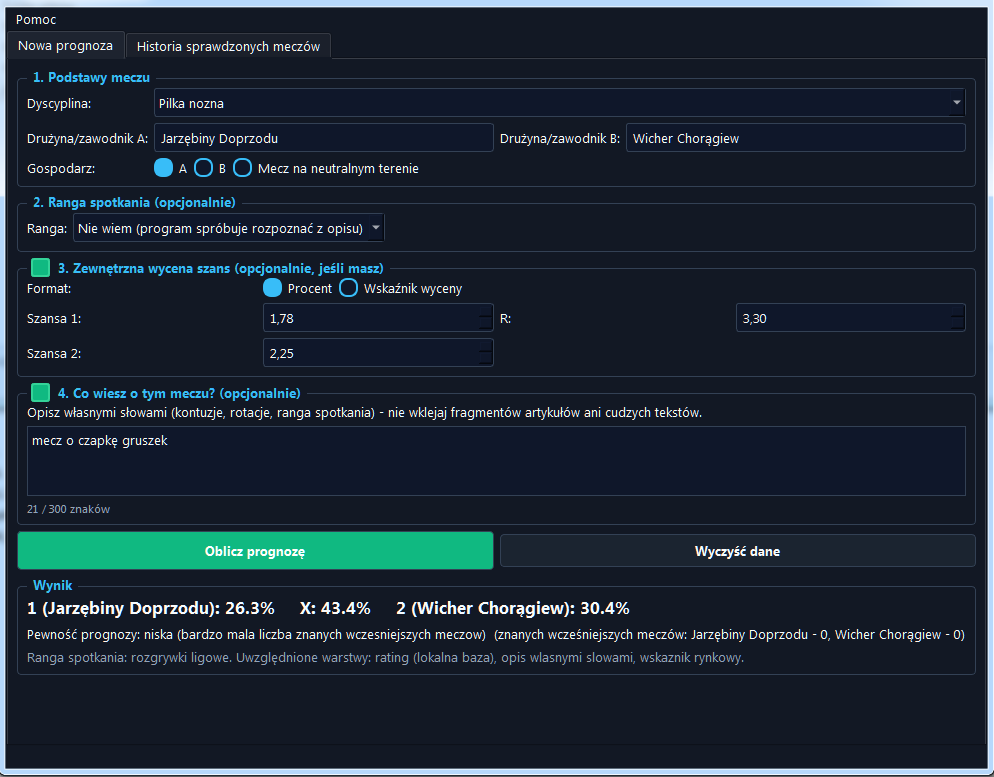

Wybierz dedykowane narzędzia Compaginis: numeryczny system predykcji wyników sportowych Predict, profesjonalny system wsparcia taktycznego dla trenera Coach, system prognozowania sportowego oparty na analizie lingwistyczno-probabilistycznej Prognoser, system trenerskiego prognozowania lig i pucharów Future lub samouczący się system prognozy pojedynczych wydarzeń sportowych dla analityków Signal.
Pięć programów desktopowych skrojonych pod potrzeby.
Analityka i Predykcja Numeryczna
Dedykowana aplikacja desktopowa do analizy danych statystycznych oraz kalkulacji numerycznych dla 7 dyscyplin sportowych. Pełna autonomia danych, wbudowany model adaptacyjny i eksport raportów. Potencjalna wyższa trafność wyników dla osób, które wolą same nakarmić model danymi i stawiają na dokładność obliczeń.
System Wsparcia Sztabu Szkoleniowego
Narzędzie dla trenera piłki nożnej: między innymi zarządzanie kadrą, tablice taktyczne, analiza obciążeń zawodników i Wellness, macierz socjometryczna szatni, model zintegrowanej prognozy meczowej, algorytmiczny generator wyjściowej jedenastki.
Analiza Lingwistyczno-Probabilistyczna
Desktopowe narzędzie analityczno-prognostyczne z nowatorskim rozwiązaniem opierającym się na ocenie języka: analizuje publicznie dostępne i otwarte dane informacyjne o rywalizacji autorskim, deterministycznym silnikiem lingwistyczno-probabilistycznym i formułuje słowny raport prognozy - praca w całości na urządzeniu użytkownika. Automatyzacja analizy danych informacyjnych dla osób, które chcą otrzymać opracowanie tekstowe, nawet jeśli wygenerowanie raportu zajmuje więcej czasu.
Prognozowanie Lig i Pucharów
Dedykowana aplikacja desktopowa dla trenerów i analityków piłki nożnej prowadzących rozgrywki ligowe oraz pucharowe (faza grupowa i drabinka pucharowa, w tym turnieje rangi mistrzostw świata czy kontynentu). Tabela futurystyczna, przewidywanie osiągnięcia najlepszego możliwego miejsca oraz pełny rozkład prawdopodobieństw dla każdego miejsca i meczu. Funkcja analizy drużyny oraz wpływu hipotetycznego wyniku na tabelę ligową. Prognoza końcowa oparta o samouczący się rating siły drużyn.
Samouczący się System dla Analityków
Dedykowana aplikacja desktopowa dla analityków-obserwatorów: prognoza pojedynczego wydarzenia sportowego w wielu dyscyplinach zespołowych i pojedynkach indywidualnych. Działanie oparte niemal w całości na mechanizmie uczącym się - im więcej wyników samodzielnie wprowadzisz, tym wyższa zgłaszana pewność i trafność prognozy.
Compaginis Predict to dedykowana aplikacja desktopowa do analizy danych statystycznych oraz kalkulacji numerycznych dla 7 dyscyplin sportowych.
Dedykowane algorytmy kalkulacyjne dostosowane do specyfiki 7 dyscyplin.
Zestaw funkcji wspomagających predykcję numeryczną.

Panel główny programu w trybie ciemnym (Predict): wynik główny prognozy widoczny jest natychmiast na pulpicie, a pełny raport i wykresy sprawdzisz jednym kliknięciem.
Szybkie przeliczanie złożonych modeli matematycznych na podstawie minimalnej ilości zmiennych wejściowych.
Ocenianie wskaźnika wydajnościowego oraz wykrywanie odchyleń statystycznych podczas analizy zdarzenia.
Wbudowany model uczący się na bazie zaistniałych zdarzeń sportowych, optymalizujący precyzję prognoz.
Wygodna możliwość zapisu danych w formatach TXT oraz PDF oraz analiza bezpośrednio w komunikacie szczegółowym.
Wybierz okres subskrypcji oprogramowania Compaginis Predict.
Elastyczny dostęp na 30 dni
Dostęp kwartalny
Dostęp półroczny
Przetestuj pełny silnik kalkulacyjny programu: wersja testowa działa 3 dni od pierwszego uruchomienia i jest ograniczona do 30 wygenerowanych raportów, a także przypisana do komputera (HWID). Bez ryzyka - po zakupie licencji możesz aktywować ten sam program kluczem do wersji pełnej.
Przed pobraniem wymagane jest potwierdzenie oświadczeń prawnych (EULA) - tak samo jak przy zakupie licencji.
Compaginis Coach to system desktopowy dla trenerów i analityków. Obsługuje zarządzanie kadrą, monitorowanie obciążeń zawodników, macierz relacji w szatni, tablice taktyczne oraz model zintegrowanej prognozy meczowej.
Kompleksowe bloki funkcjonalne.

Panel bloku taktycznego i muraw w Compaginis Coach: Tablica Rysowania.
Edytor kadry, statystyki bieżącego okresu, monitorowanie kartek, kontuzji oraz parametrów fizycznych.
Interaktywne przesuwanie formacji, korytarze wertykalne/horyzontalne, strefy bezpośredniej finalizacji oraz rysowanie schematów stałych fragmentów gry.
Kontrola obciążeń, Wellness zawodników oraz macierz socjometryczna relacji.
Zintegrowana prognoza wyniku, analiza zachowań sędziego, automatyczny wybór najlepszej 11-tki, eksport raportów taktycznych do PDF i TXT.
Wybierz okres subskrypcji systemu trenerskiego Compaginis Coach.
I masz dostęp na całą rundę
Posiadasz dostęp na cały rok szkoleniowy
Przetestuj pełny system trenerski na stałych danych demonstracyjnych: kadra z zawodnikami rezerwowymi, kadra rywala, sędzia, raporty PDF ze znakiem wodnym. Demo działa 3 dni od pierwszego uruchomienia i jest przypisane do komputera (HWID). Bez ryzyka - po zakupie licencji możesz aktywować ten sam program kluczem do wersji pełnej.
Przed pobraniem wymagane jest potwierdzenie oświadczeń prawnych (EULA) - tak samo jak przy zakupie licencji.
Compaginis Prognoser to desktopowe narzędzie analityczno-prognostyczne. Analizuje językowo publicznie dostępne otwarte dane informacyjne o rywalizacji autorskim, deterministycznym silnikiem lingwistyczno -probabilistycznym i formułuje słowny raport z prognozą procentową wyniku oraz wskaźnikiem napięcia przedmeczowego - w całości na urządzeniu użytkownika i tak jak wszystkie produkty marki Compaginis bez wykorzystania sztucznej inteligencji (AI) ani sieci neuronowych.
Autorski silnik analityczny pracujący na języku i prawdopodobieństwie.

Panel główny programu Compaginis Prognoser: konfiguracja analizy, pasek postępu oraz podgląd okna dziennika operacyjnego.
Autorski, deterministyczny silnik analizuje treść publicznie dostępnych danych informacyjnych w wielu językach i przekłada sygnały językowe na prognozę procentową - bez wykorzystania AI ani sieci neuronowych. Prognoser posiada opcjonalnie funkcję kalibracji prawdopodobieństwa, która jest modułem uczącym program na realnych wynikach rywalizacji sportowej.
Program przeszukuje publicznie dostępne dane informacyjne w rynkach językowych, dokonując swojej oceny i przetwarzając informacje słowne na prognozę.
Wynik główny prognozy z przedziałem niepewności, charakter przewidywanej rywalizacji, wskaźnik napięcia przedmeczowego oraz uczciwa ocena wiarygodności i braków w danych.
Analiza i obliczenia wykonywane na urządzeniu użytkownika; zapisywane raporty i lokalna baza prognoz. Uznaniowo cykliczne monitorowanie z alertem o zmianach w prognozie.
Trzy kroki od danych do słownego raportu.
Dyscyplinę sportową wybierasz z listy rozwijanej.
Nazwy drużyn lub nazwiska zawodników obu stron oraz datę wydarzenia z list rozwijanych.
Po analizie (pasek postępu) wynik główny pojawi się w panelu, a pełny raport słowny poniżej.
Wymagany ciągły dostęp do Internetu w trakcie przeprowadzania analizy - ale analiza i prognozowanie wykonywane są w całości na urządzeniu użytkownika, a wyniki, baza prognoz i eksporty (PDF/TXT) zapisywane są lokalnie.
Wybierz okres subskrypcji systemu prognozowania Compaginis Prognoser.
Elastyczny dostęp na 30 dni
Dostęp kwartalny
Dostęp półroczny
Przetestuj pełny silnik lingwistyczno-probabilistyczny programu: wersja testowa działa 3 dni od pierwszego uruchomienia i jest przypisana do komputera (HWID). Bez ryzyka - po zakupie licencji możesz aktywować ten sam program kluczem do wersji pełnej.
Przed pobraniem wymagane jest potwierdzenie oświadczeń prawnych (EULA) - tak samo jak przy zakupie licencji.
Compaginis Future to desktopowe narzędzie dla trenerów i analityków prowadzących rozgrywki ligowe (system mecz i rewanż) oraz pucharowe (faza grupowa i drabinka pucharowa) - w tym turnieje rangi mistrzostw świata czy mistrzostw kontynentu. Na podstawie wprowadzanych na bieżąco wyników program buduje własny, samouczący się model siły drużyn i przelicza prognozowaną tabelę końcową, przewiduje najlepsze możliwe miejsce w tabeli oraz pełny rozkład szans w procentach. Posiada mechanizmy analizy zespołu oraz oddziaływania potencjalnego wyniku na kształt tabeli ligowej.
Tabela futurystyczna, Rekomendacje oraz pełny rozkład Prawdopodobieństw - w jednym programie.

Zakładka Prawdopodobieństwa w Compaginis Future: pełny rozkład szans na każde miejsce w tabeli oraz prognoza wyniku każdego pozostałego meczu.
Prognoza tabeli końcowej sezonu: mecze już rozegrane liczą się tak, jak się odbyły, a pozostałe są domykane najbardziej prawdopodobnym wynikiem według bieżącego modelu siły drużyn. Przelicza się automatycznie po każdej zmianie wyniku.
Wyznacza teoretyczne maksimum (najbardziej optymistyczny, ale wciąż matematycznie możliwy układ pozostałych wyników) wraz z komunikatem, jakie wyniki własnych meczów są do tego potrzebne, oraz osobną, realistyczną prognozę miejsca w tabeli.
Tysiące losowych rozegrań pozostałej części sezonu według bieżącej siły drużyn dają pełny rozkład szans w procentach na każde miejsce w tabeli oraz na wynik każdego pojedynczego, jeszcze nierozegranego meczu.
Faza grupowa z automatycznym rozstawieniem oraz drabinka pucharowa (mecz pojedynczy lub dwumecz z zasadą bramek na wyjeździe), z prognozą przebiegu aż do finału - format, który można wykorzystać też do dowolnego turnieju rangi mistrzostw świata czy kontynentu. Eksport zbiorczy wszystkich zakładek do PDF i TXT. Tabele aktywnych zakładek są możliwe do zapisania w pliku CSV.
Wybierz okres subskrypcji systemu prognozowania lig i pucharów Compaginis Future.
Elastyczny dostęp na 30 dni
Dostęp kwartalny
Dostęp półroczny
Przetestuj Tabelę futurystyczną, Rekomendacje oraz Prawdopodobieństwa na przykładowych, fikcyjnych rozgrywkach demonstracyjnych: ograniczona liczba drużyn, a raporty PDF zawierają znak wodny. Demo działa 3 dni od pierwszego uruchomienia i jest przypisane do komputera (HWID). Bez ryzyka - po zakupie licencji możesz aktywować ten sam program kluczem do wersji pełnej.
Przed pobraniem wymagane jest potwierdzenie oświadczeń prawnych (EULA) - tak samo jak przy zakupie licencji.
Compaginis Signal to dedykowana aplikacja desktopowa stworzona z myślą o analitykach-obserwatorach. prognoza pojedynczego wydarzenia sportowego, obejmująca zarówno dyscypliny zespołowe, jak i pojedynki indywidualne. Działanie programu opiera się niemal w całości na mechanizmie uczącym się - im więcej wyników samodzielnie wprowadzisz, tym wyższa zgłaszana pewność i trafność prognozy.
Jeden, wspólny silnik dla dyscyplin zespołowych oraz pojedynków indywidualnych.
Obsługiwane są ligi, puchary, mecze towarzyskie, turnieje oraz mecze reprezentacji - z wyłączeniem formatów wieloosobowych rankingów cyklicznych (np. Pucharu Świata w narciarstwie, Grand Prix czy mityngów lekkoatletycznych).
Jeden, uniwersalny silnik predykcyjny dla wielu dyscyplin i pojedynków.

Panel główny programu (Signal): minimalny formularz prognozy oraz historia sprawdzonych wydarzeń, z których samodzielnie budujesz lokalną bazę.
Rdzeń programu niemal w całości opiera się na mechanizmie uczącym się na realnych wynikach, które samodzielnie wprowadzasz. Program działa bez wykorzystania sztucznej inteligencji (AI) i sieci neuronowych. Jakość i pewność prognozy rosną wprost proporcjonalnie do ilości dotąd wprowadzonych wyników.
Jeden, wspólny silnik dla dyscyplin zespołowych oraz pojedynków indywidualnych takich jak tenis, szachy, MMA/boks, esport - ligi, puchary, mecze towarzyskie, turnieje oraz mecze reprezentacji.
Niezależny plik na komputerze użytkownika, w którym są zapisywane pojedyncze wyniki już rozegranych wydarzeń.
Prognoza działa już na podstawie wpisu samych nazw drużyn, sportowców i dyscyplin. Opcjonalnie można wpisać ręcznie wskaźnik wyceny szans oraz krótki opis wydarzenia własnymi słowami.
Wybierz okres subskrypcji systemu Compaginis Signal.
Elastyczny dostęp na 30 dni
Dostęp kwartalny
Dostęp półroczny
Przetestuj pełny mechanizm samouczący programu: wersja testowa działa 3 dni od pierwszego uruchomienia i jest ograniczona do 30 wygenerowanych prognoz, a także przypisana do komputera (HWID). Bez ryzyka - po zakupie licencji możesz aktywować ten sam program kluczem do wersji pełnej.
Przed pobraniem wymagane jest potwierdzenie oświadczeń prawnych (EULA) - tak samo jak przy zakupie licencji.
Specyfikacja środowiska operacyjnego oraz warunki korzystania z oprogramowania.
Oprogramowanie Compaginis zostało zaprojektowane z myślą o pełnej suwerenności danych. Aplikacje nie posiadają mechanizmów automatycznego ściągania danych z zewnętrznych nieautoryzowanych API. Prognozy i analizy nie są gotowcami generowanymi przez AI.
Użytkownik wprowadza dane samodzielnie lub za pomocą lokalnych baz, co gwarantuje pełną autonomię, niezależność oraz odporność na awarie zewnętrznych serwerów czy blokady sieciowe.
Compaginis Prognoser w trakcie analizy korzysta z publicznie dostępnych danych informacyjnych (wymagany ciągły dostęp do Internetu w trakcie przeprowadzania analizy) - ale analiza i prognozowanie wykonywane są w całości na urządzeniu użytkownika, autorskim, deterministycznym silnikiem lingwistyczno-probabilistycznym, bez wykorzystania sztucznej inteligencji (AI) ani sieci neuronowych, a wyniki zapisywane są lokalnie. Program ocenia wypowiedzi, wyciąga z nich swoje wnioski i komunikuje w postaci raportu.
Compaginis Signal opiera swoje działanie niemal w całości na mechanizmie uczącym się, budowanym wyłącznie na bazie wyników, które użytkownik samodzielnie wprowadza po zakończonych wydarzeniach sportowych - od ilości i systematyczności wprowadzanych danych zależy wprost jakość i pewność zgłaszanej prognozy. Program nie korzysta z automatycznego pobierania danych ani ze sztucznej inteligencji (AI).